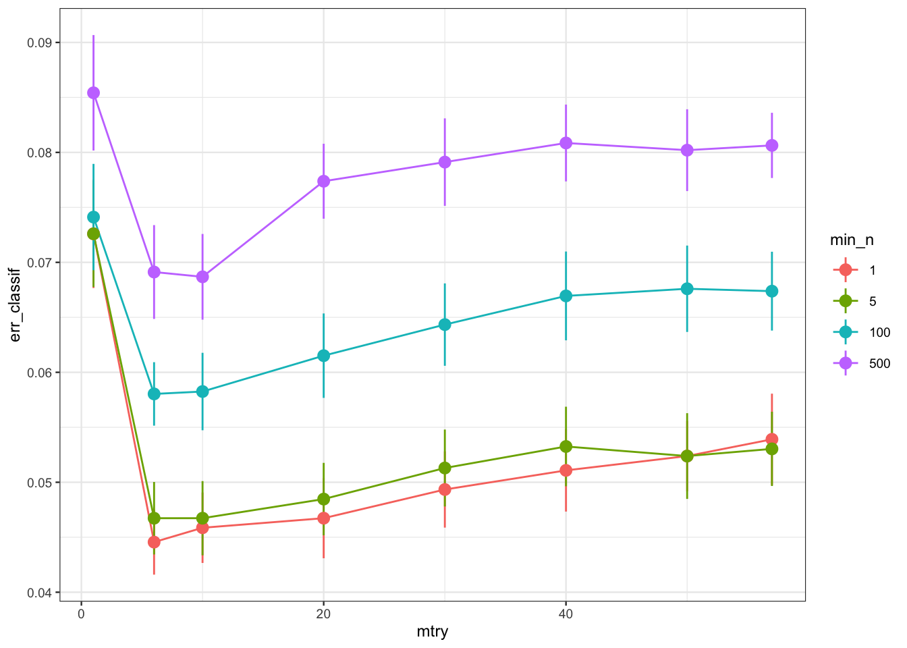
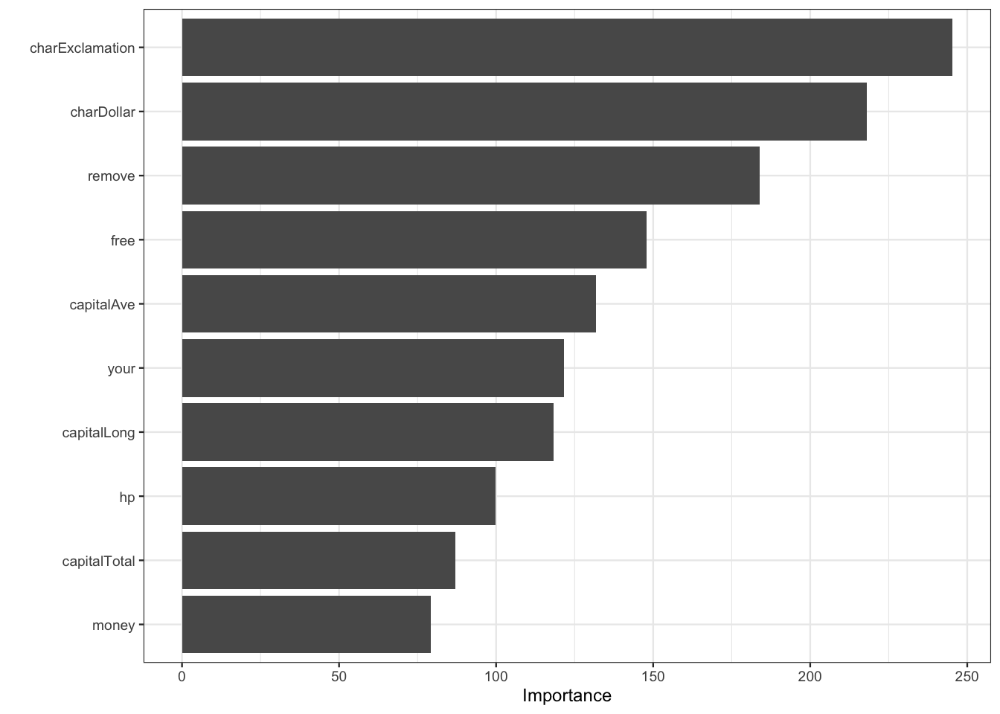
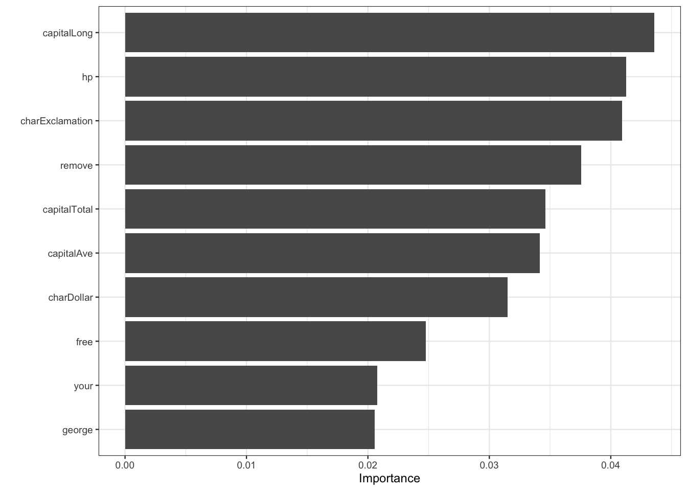

2 Forêts aléatoires
Les méthodes par arbres présentées précédemment sont des algorithmes qui possèdent tout un tas de qualités (facile à mettre en œuvre, interprétable…). Ce sont néanmoins rarement les algorithmes qui se révèlent les plus performants. Les méthodes d’agrégation d’arbres présentées dans cette partie sont souvent beaucoup plus pertinentes, notamment en terme de qualité de prédiction. Elles consistent à construire un très grand nombre d’arbres “simples” : \(g_1,\dots,g_B\) et à les agréger en faisant la moyenne : \[\frac{1}{B}\sum_{k=1}^Bg_k(x).\] Les forêts aléatoires (Breiman 2001) et le gradient boosting (Friedman 2001) utilisent ce procédé d’agrégation. Dans ce chapitre on étudiera ces algorithmes sur le je de données spam :
library(kernlab)
data(spam)
set.seed(1234)
spam <- spam[sample(nrow(spam)),]Le problème est d’expliquer la variable binaire type par les autres.
L’algorithme des forêts aléatoires consiste à construire des arbres sur des échantillons bootstrap et à les agréger. Il peut s’écrire de la façon suivante :
Entrées :
- \(x\in\mathbb R^d\) l’observation à prévoir, \(\mathcal D_n\) l’échantillon ;
- \(B\) nombre d’arbres ; \(n_{max}\) nombre max d’observations par nœud
- \(m\in\{1,\dots,d\}\) le nombre de variables candidates pour découper un nœud.
Algorithme : pour \(k=1,\dots,B\) :
- Tirer un échantillon bootstrap dans \(\mathcal D_n\)
- Construire un arbre CART sur cet échantillon bootstrap, chaque coupure est sélectionnée en minimisant la fonction de coût de CART sur un ensemble de \(m\) variables choisies au hasard parmi les \(d\). On note \(T(.,\theta_k,\mathcal D_n)\) l’arbre construit.
Sortie : l’estimateur \(T_B(x)=\frac{1}{B}\sum_{k=1}^BT(x,\theta_k,\mathcal D_n)\).
Cet algorithme peut être utilisé sur R avec la fonction randomForest du package randomForest ou la fonction ranger du package ranger.
Exercice 2.1 (Biais et variance des algorithmes bagging) Comparer le biais et la variance de la forêt \(T_B(x)\) au biais et à la variance d’un arbre de la forêt \(T(x,\theta_k,\mathcal D_n)\). On pourra utiliser \(\rho(x)=\text{corr}(T(x,\theta_1,\mathcal D_n),T(x,\theta_2,\mathcal D_n))\) pour comparer les variances.
Pour simplifier les notations on considère \(T_1,\dots,T_B\) \(B\) variables aléatoires de même loi et de variance \(\sigma^2\). Il est facile de voir que \(\mathbf E[\bar T]=\mathbf E[T_1]\). Pour la variance on a
\[ \begin{aligned} \mathbf V[\bar T]= & \frac{1}{B^2}\mathbf V\left[\sum_{i=1}^BT_i\right]= \frac{1}{B^2}\left[\sum_{i=1}^V\mathbf V[T_i]+\sum_{i\neq j}\mathbf{cov}(T_i,T_j)\right] \\ = & \frac{1}{B^2}\left[B\sigma^2+B(B-1)\rho\sigma^2\right]=\rho\sigma^2+\frac{1-\rho}{B}\sigma^2. \end{aligned} \]
Considérons \(\rho\leq 0\). On déduit de l’équation précédente que \(B\leq 1-1/\rho\). Par exemple si \(\rho=-1\), \(B\) doit être inférieur ou égal à 2. Il n’est en effet pas possible de considérer 3 variables aléatoires de même loi dont les corrélations 2 à 2 sont égales à -1. De même si \(\rho=-1/2\), \(B\leq 3\)…
Exercice 2.2 (RandomForest versus ranger) On sépare le jeu de données spam en un échantillon d’apprentissage et un échantillon test :
set.seed(1234)
library(tidymodels)
data_split <- initial_split(spam, prop = 3/4)
spam.app <- training(data_split)
spam.test <- testing(data_split)Entraîner une forêt aléatoire sur les données d’apprentissage uniquement en utilisant les paramètres par défaut de la fonction randomForest. Commenter.
library(randomForest) set.seed(123) (foret1 <- randomForest(type~.,data=spam.app))Call: randomForest(formula = type ~ ., data = spam.app) Type of random forest: classification Number of trees: 500 No. of variables tried at each split: 7 OOB estimate of error rate: 4.72% Confusion matrix: nonspam spam class.error nonspam 2023 58 0.02787122 spam 105 1264 0.07669832Il s’agit d’une forêt de classification avec 500 arbres. Le paramètre
mtryvaut 7 et l’erreur OOB est de 4.72%.Calculer les groupes prédits pour les individus de l’échantillon test et en déduire une estimation de l’erreur de classification.
prev.class <- predict(foret1,newdata=spam.test) head(prev.class)4046 1685 3000 1403 1014 561 nonspam spam nonspam spam spam spam Levels: nonspam spammean(prev.class!=spam.test$type)[1] 0.04952215Calculer les estimations de la probabilité de spam pour les individus de l’échantillon test.
prev.prob <- predict(foret1,newdata=spam.test,type="prob") head(prev.prob)nonspam spam 4046 0.780 0.220 1685 0.010 0.990 3000 0.908 0.092 1403 0.216 0.784 1014 0.028 0.972 561 0.054 0.946Refaire les questions précédentes avec la fonction ranger du package ranger (voir https://arxiv.org/pdf/1508.04409.pdf).
library(ranger)(foret2 <- ranger(type~.,data=spam.app))Ranger result Call: ranger(type ~ ., data = spam.app) Type: Classification Number of trees: 500 Sample size: 3450 Number of independent variables: 57 Mtry: 7 Target node size: 1 Variable importance mode: none Splitrule: gini OOB prediction error: 4.99 %class.ranger <- predict(foret2,data=spam.test)$predictions head(class.ranger)[1] nonspam spam nonspam spam spam spam Levels: nonspam spammean(class.ranger!=spam.test$type)[1] 0.04865334Si on souhaite estimer les probabilités d’être (ou pas) spam, il faut le spécifier dans la construction de la forêt :
foret.prob <- ranger(type~.,data=spam.app,probability=TRUE) prob.ranger <- predict(foret.prob,data=spam.test)$predictions head(prob.ranger)nonspam spam [1,] 0.74964937 0.25035063 [2,] 0.01032460 0.98967540 [3,] 0.90508132 0.09491868 [4,] 0.31905319 0.68094681 [5,] 0.03715000 0.96285000 [6,] 0.07066232 0.92933768Comparer les temps de calcul de randomForest et ranger.
system.time(randomForest(type~.,data=spam.app))utilisateur système écoulé 6.804 0.151 7.075system.time(ranger(type~.,data=spam.app))utilisateur système écoulé 2.068 0.017 0.318ranger est beaucoup plus rapide.
Exercice 2.3 (Sélection des paramètres) Nous nous intéressons ici au choix des paramètres de la forêt aléatoire.
Expliquer la sortie suivante.
set.seed(12345) library(OOBCurve) foret1 <- ranger(type~.,data=spam,keep.inbag=TRUE) spam.task <- mlr::makeClassifTask(data=spam,target="type") erreurs <- OOBCurve(foret1,measures = list(mmce, auc), task=spam.task,data=spam) erreurs1 <- erreurs |> as_tibble() |> mutate(ntrees=1:500) |> filter(ntrees>=5) |> pivot_longer(-ntrees,names_to="Erreur",values_to="valeur") ggplot(erreurs1)+aes(x=ntrees,y=valeur)+geom_line()+ facet_wrap(~Erreur,scales="free")
Ce graphe permet de visualiser l’évolution des erreurs OOB (AUC et erreur de classification) en fonction du nombre d’arbres. Il peut être utilisé pour voir si l’algorithme a bien “convergé”. Si ce n’est pas le cas, il faut construire une forêt avec plus d’arbres.
Construire la forêt avec
mtry=1et comparer ses performances avec celle construite précédemment.set.seed(321) foret2 <- ranger(type~.,data=spam,mtry=1) foret1Ranger result Call: ranger(type ~ ., data = spam, keep.inbag = TRUE) Type: Classification Number of trees: 500 Sample size: 4601 Number of independent variables: 57 Mtry: 7 Target node size: 1 Variable importance mode: none Splitrule: gini OOB prediction error: 4.59 %foret2Ranger result Call: ranger(type ~ ., data = spam, mtry = 1) Type: Classification Number of trees: 500 Sample size: 4601 Number of independent variables: 57 Mtry: 1 Target node size: 1 Variable importance mode: none Splitrule: gini OOB prediction error: 8.09 %La forêt
foret1est plus performante en terme d’erreur de classification OOB.A l’aide des outils
tidymodelssélectionner les paramètresmtryetmin_ndans les grillesc(1,6,seq(10,50,by=10),57)etc(1,5,100,500). On pourra notamment visualiser les critères en fonction des valeurs de paramètres.On commence par construire la grille :
rf_grid <- expand.grid(mtry=c(1,6,seq(10,50,by=10),57), min_n=c(1,5,100,500))On définit le workflow
set.seed(1234) blocs <- vfold_cv(spam, v = 10) tune_spec <- rand_forest(mtry = tune(),min_n= tune()) |> set_engine("ranger") |> set_mode("classification") rf_wf <- workflow() |> add_model(tune_spec) |> add_formula(type ~ .)On effectue la validation croisée en parallélisant :
cl <- makePSOCKcluster(4) registerDoParallel(cl) rf_res <- rf_wf |> tune_grid(resamples = blocs,grid = rf_grid) on.exit(stopCluster(cl))On étudie les meilleures valeurs de paramètres pour les deux critères considérés :
rf_res |> show_best("roc_auc")# A tibble: 5 × 8 mtry min_n .metric .estimator mean n std_err .config <dbl> <dbl> <chr> <chr> <dbl> <int> <dbl> <chr> 1 6 1 roc_auc binary 0.988 10 0.00157 Preprocessor1_Model02 2 6 5 roc_auc binary 0.988 10 0.00168 Preprocessor1_Model10 3 10 1 roc_auc binary 0.987 10 0.00188 Preprocessor1_Model03 4 10 5 roc_auc binary 0.987 10 0.00178 Preprocessor1_Model11 5 20 1 roc_auc binary 0.985 10 0.00195 Preprocessor1_Model04rf_res |> show_best("accuracy")# A tibble: 5 × 8 mtry min_n .metric .estimator mean n std_err .config <dbl> <dbl> <chr> <chr> <dbl> <int> <dbl> <chr> 1 6 1 accuracy binary 0.955 10 0.00296 Preprocessor1_Model02 2 10 1 accuracy binary 0.954 10 0.00320 Preprocessor1_Model03 3 6 5 accuracy binary 0.953 10 0.00330 Preprocessor1_Model10 4 10 5 accuracy binary 0.953 10 0.00337 Preprocessor1_Model11 5 20 1 accuracy binary 0.953 10 0.00364 Preprocessor1_Model04On visualise les erreurs de classification
rf_res |> collect_metrics() |> filter(.metric=="accuracy") |> mutate(min_n=as.factor(min_n),err_classif=1-mean) |> ggplot()+aes(x=mtry,y=err_classif,color=min_n)+geom_line()+ geom_pointrange((aes(ymin=err_classif-std_err, ymax=err_classif+std_err)))
et les AUC
rf_res |> collect_metrics() |> filter(.metric=="roc_auc") |> mutate(min_n=as.factor(min_n),auc=mean) |> ggplot()+aes(x=mtry,y=auc,color=min_n)+geom_line()+ geom_pointrange((aes(ymin=mean-std_err,ymax=mean+std_err)))
On retrouve bien des petites valeurs pour
min_n: il faut des arbres profonds pour que la forêt soit performante. Les valeurs optimales demtryse situent autours de la valeur par défaut (7 ici). On peut donc conserver cette valeur pour ré-ajuster la forêt sur toutes les données :foret_finale <- rf_wf |> finalize_workflow(list(mtry=7,min_n=1)) |> fit(data=spam)Visualiser l’importance des variables pour les scores d’impureté et de permutations.
set.seed(1234) foret.imp <- ranger(type~.,data=spam,importance="impurity") foret.perm <- ranger(type~.,data=spam,importance="permutation") vip::vip(foret.imp)
vip::vip(foret.perm)
Exercice 2.4 (Arbre vs forêt aléatoire) Proposer et mettre en œuvre une procédure permettant de comparer les performances (courbes ROC, AUC et accuracy) d’un arbre CART utilisant la procédure d’élagage proposée dans la Section 1.2 avec une forêt aléatoire.
On peut envisager différentes stratégies pour répondre à cette question. Il convient de bien préciser ce que l’on souhaite faire. Il ne s’agit pas de sélectionner les paramètres d’un algorithme. On souhaite comparer deux algorithmes de prévision :
- un arbre CART qui utilise la procédure d’élagage CART : création de la suite optimale de sous arbre puis sélection d’un arbre dans cette suite en estimant l’erreur de classification par validation croisée ;
- une forêt aléatoire qui prend les valeurs par défaut pour
nodesizeet qui sélectionmtryen minimisant l’erreur OOB (c’est un choix).
Il faut estimer les risques demandés en se donnant une stratégie de ré-échantillonnage. On choisit une validation croisée 10 blocs :
set.seed(123)
blocs <- vfold_cv(spam, v = 10)On crée une fonction spécifique à chaque algorithme qui calculera les prévisions de nouveaux individus :
prev.arbre <- function(df,newX){
arbre <- rpart(type~.,data=df,cp=1e-8,minsplit=15)
cp_opt <- arbre$cptable |> as.data.frame() |>
filter(xerror==min(xerror)) |>
dplyr::select(CP) |> slice(1) |> as.numeric()
arbre.opt <- prune(arbre,cp=cp_opt)
predict(arbre,newdata=newX,type="prob")[,2]
}prev.foret <- function(df,grille.mtry=c(seq(1,55,by=5),57),newX){
err <- rep(0,length(grille.mtry))
for (m in 1:length(grille.mtry)){
err[m] <- ranger(type~.,data=df)$prediction.error
}
foret <- ranger(type~.,data=df,probability=TRUE,
mtry=grille.mtry[which.min(err)])
predict(foret,data=newX,type="response")$predictions[,2]
}On effectue la validation croisée :
set.seed(321)
score <- as_tibble(matrix(0,nrow=nrow(spam),ncol=2))
names(score) <- c("arbre","foret")
for (k in 1:10){
k
ind.app <- blocs$splits[[k]]$in_id
dapp <- spam[ind.app,]
dtest <- spam[-ind.app,]
score[-ind.app,1] <- prev.arbre(df=dapp,newX = dtest)
score[-ind.app,2] <- prev.foret(df=dapp,newX = dtest)
}
score1 <- score |> mutate(obs=spam$type) |>
pivot_longer(-obs,names_to = "Methode",values_to = "Prob") |>
mutate(class=recode_factor(as.numeric(Prob>0.5),
`0`="nonspam",`1`="spam"))On déduit la courbe ROC, l’AUC
score1 |> group_by(Methode) |>
roc_curve(obs,Prob,event_level="second") |> autoplot()
score1 |> group_by(Methode) |> roc_auc(obs,Prob,event_level="second")# A tibble: 2 × 4
Methode .metric .estimator .estimate
<chr> <chr> <chr> <dbl>
1 arbre roc_auc binary 0.958
2 foret roc_auc binary 0.979et l’accuracy
score1 |> group_by(Methode) |> accuracy(obs,class)# A tibble: 2 × 4
Methode .metric .estimator .estimate
<chr> <chr> <chr> <dbl>
1 arbre accuracy binary 0.919
2 foret accuracy binary 0.939